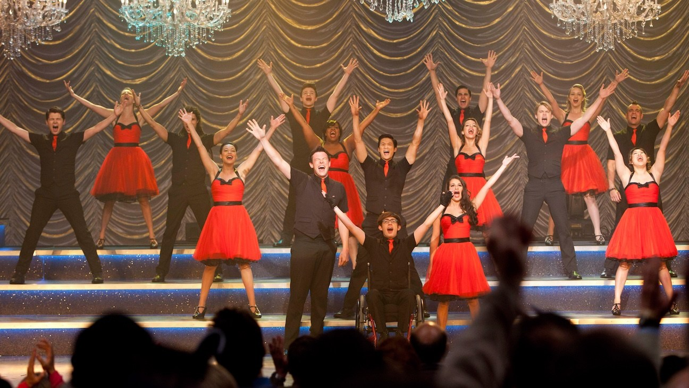
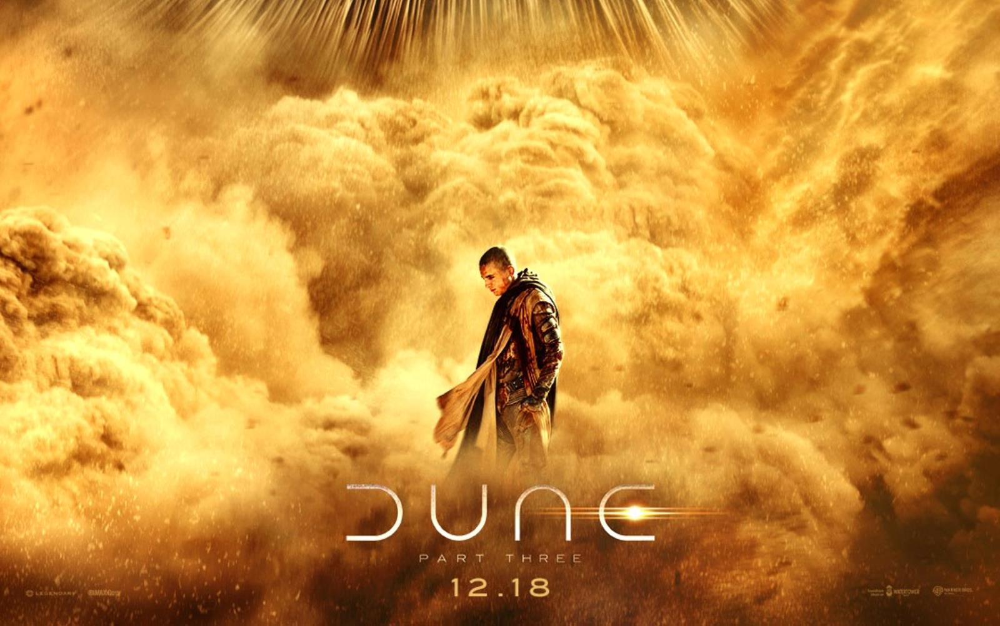
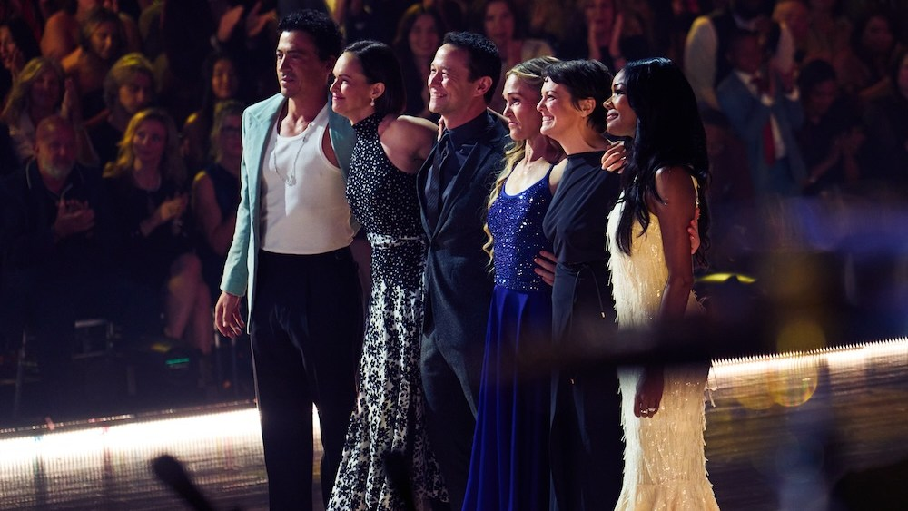
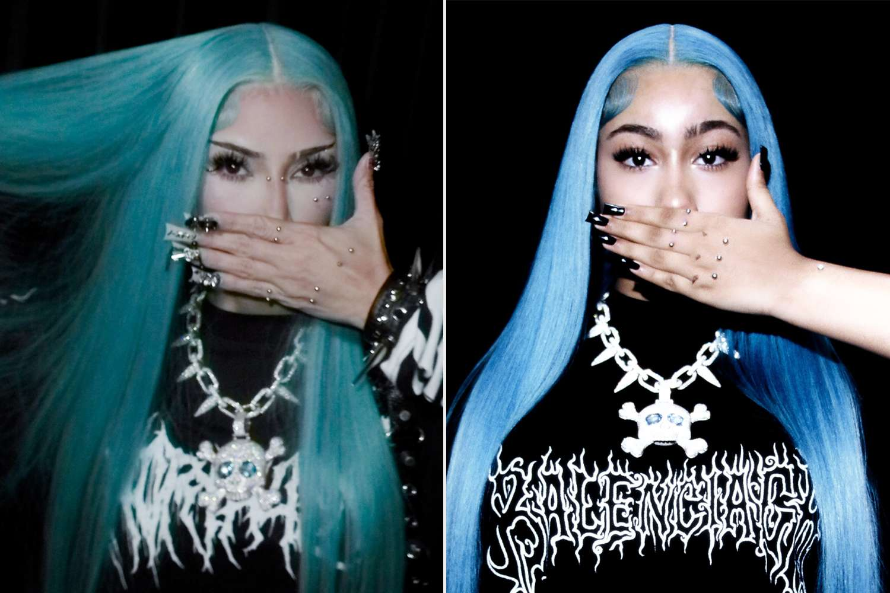

Glee is officially coming back with a revival at Disney+ and Hulu

Disney+ and Hulu gave a series order this morning to a revival of Glee, the Fox musical that ran from 2009 to 2015. 20th Television, which made the original, is producing. That is about all Disney announced: no cast or producers yet, though co-creator Ryan Murphy said in September that he’d finished a script with Brad Falchuk and Ian Brennan and had been in touch with about 10 original cast members.
Murphy has said the show “came back around” with younger viewers, and its songs still draw about 4 million monthly listeners on Spotify. The hard part is obvious: Cory Monteith and Naya Rivera have died. Chris Colfer said this month it would be “really hard” without Rivera, but joked that fans would “come after me with pitchforks and jazz hands” if he said no.
Dune: Part Three tickets go on sale, and the new teaser puts Paul and Chani at war

Warner Bros. opened ticket sales worldwide for Denis Villeneuve’s final Dune film Tuesday, with a new 30-second teaser and a batch of posters. The teaser centers on Zendaya’s Chani turning on Timothée Chalamet’s Emperor Paul, telling him, “You promised me that you would never take power in your name.” Hans Zimmer also released the first track from the score.
Based on Dune Messiah and set 17 years after Part Two, it opens in theaters and IMAX on Dec. 18, the same corridor as Avengers: Doomsday, and fans online are already planning double features. Earlier IMAX 70mm presales sold out at select venues. The newest teaser wasn’t posted as a standalone YouTube video, so the trailer link is the official full trailer.
 Dune: Part Three trailer on YouTube →
·
ComicBookMovie.com →
Dune: Part Three trailer on YouTube →
·
ComicBookMovie.com →
Julia Stiles reunites the 10 Things I Hate About You cast for a Heath Ledger tribute on DWTS

For Dancing With the Stars’ Dedication Night on Tuesday, Stiles and pro Ezra Sosa danced to “Can’t Take My Eyes Off You,” the Frankie Valli song Ledger’s Patrick sang to her Kat from the bleachers in the 1999 film. It ended on a photo of the two of them, and Joseph Gordon-Levitt, Larisa Oleynik, Gabrielle Union, Andrew Keegan and Susan May Pratt joined her on the floor for a group hug.
Stiles told Variety she “bawled” in rehearsals and had begged every cast member to show up: “I said it had to be the whole cast.” The same episode brought the season’s first 10s and Tyler Cameron’s on-air baby announcement.
 10 Things I Hate About You trailer on YouTube →
·
10 Things I Hate About You trailer on YouTube →
·
 Variety →
·
Variety →
·
 Deadline →
Deadline →
Kim Kardashian’s first Halloween costume of the year is her daughter North West

Kardashian posted TikTok and Instagram looks Tuesday as 13-year-old North: sleek electric-blue hair, faux bridge and dermal piercings, gem-studded nails, North’s spiked skull necklace, and her signature hand-over-mouth pose. Comments filled up with people saying they couldn’t tell who was who, and Khloé wrote simply, “Twins!!!!!!”
Fans read it as a show of support after North recently pushed back on trolls in a TikTok Live: “Stop saying I’m demonic just because I like to dress this way. Don’t judge a book by its cover.”
Bottom of the news
- David Fincher says Quentin Tarantino’s first draft of The Further Mis-Adventures of Cliff Booth ran 230 pages and he cut about 60; it hits IMAX Nov. 25 and Netflix Dec. 23.
- The Golden Globes rejected Lionsgate’s bid to run Michael as a comedy or musical, keeping it in drama against The Odyssey.
- Lionsgate shares jumped more than 15% on a Bloomberg report that Legendary has made a new takeover offer.
- Euphoria’s Hunter Schafer revealed she had gender-affirming bottom surgery in December.
- Esther McGregor and Emilio Sakraya are cast as Violet and Xaden in the Fourth Wing series.
- Francis Lawrence will direct a Red Rising movie at Paramount.
- Denzel Washington and Christopher McQuarrie are teaming up on a new thriller.
- Robert Pattinson says director Lance Oppenheim won him over for Primetime, playing Chris Hansen, with 200 cans of Zyn.
- Taylor Swift’s “Patient Zero” holds No. 1 on the Hot 100 for a third week, and Tame Impala and JENNIE’s “Dracula” climbs to No. 5.